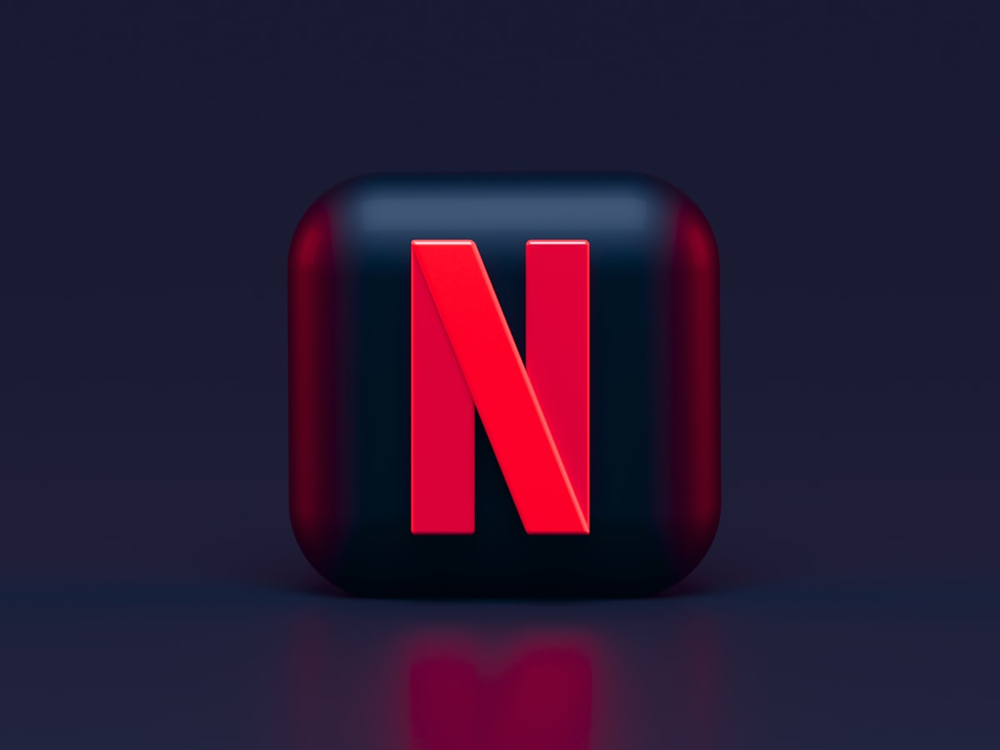

We've crossed a historic threshold. In 2025, streaming accounts for 44.8% of total TV viewership, officially surpassing the combined share of broadcast (20.1%) and cable (24.1%). This isn't a trend anymore - it's the new reality of television.
"90% of US households now use internet-connected TV devices at least once per month. CTV is no longer the future — it's the present."
The Numbers Tell the Story
Let's look at the data driving this transformation:
- 117 million households in the US use CTVs in 2025, projected to reach 121 million by 2027
- The average US adult watches more than 2 hours of CTV daily - expected to grow 25% by 2026
- US CTV ad spending: $32.45 billion in 2025, projected to surpass traditional TV by 2028 at $45.96 billion
- 68% of marketers now view CTV as a "must-have" in their media mix

The Ad-Supported Revolution
One of the most significant shifts in 2025 is the rise of ad-supported streaming. By Q1 2025, ad-supported subscriptions accounted for 57% of new subscriber additions. The economics are clear: consumers want premium content but are increasingly price-sensitive.
US viewing time on FAST (Free Ad-Supported Streaming TV) platforms reached 1.8 billion hours in August, up 43% year-over-year. This represents a fundamental shift in how content is monetized and consumed.
Programmatic Takes Over
The technical infrastructure of CTV advertising has matured dramatically. In 2025, over 90% of CTV ad dollars are transacted through programmatic pipes. This automation is driving efficiency but also raising the bar for targeting and measurement.
Key programmatic trends:
- Voice and remote interactivity becoming standard by 2026
- Dynamic Creative Optimization (DCO) adoption doubling by 2027
- Interactive shoppable ads expected to represent 10% of all CTV ads by 2026
The Platform Wars
The CTV landscape remains highly competitive:
Roku maintains a leading position with 37% market share in North America, followed by Amazon at 17%. But the streaming content wars are equally fierce - Netflix, YouTube, Disney, and Amazon account for most streaming time today.
The industry anticipates consolidation. A potential Disney+ and Hulu merger in 2026 could reshape the competitive landscape, potentially giving Disney $3 billion in additional US ad revenues.
The India Opportunity
While the US leads in CTV maturity, India represents perhaps the most exciting growth story:
- CTV households could reach 60 million by end of 2025 - a 4x increase from 2020
- The India Smart TV and OTT market: $22.39 billion in 2025, projected to reach $51.65 billion by 2030
- Growth rate of 18.2% CAGR - among the fastest globally
- 5G rollout creating new opportunities for streaming quality
The Indian market has unique characteristics: a strong preference for regional content, price sensitivity driving FAST adoption, and a mobile-first audience transitioning to big-screen experiences. At Lumio, we're building for this exact opportunity — read about our journey from Xiaomi to India's next smart TV revolution.
What's Driving the Shift
Several factors are accelerating CTV adoption:
Content Quality: Streaming-first productions now rival theatrical releases. The perception gap between "TV content" and "premium content" has vanished.
User Experience: Smart TV interfaces have matured. Voice control, personalized recommendations, and seamless app switching have made CTV as intuitive as traditional TV.
Economic Reality: Cord-cutting saves money. With ad-supported tiers from Netflix, Disney+, and others, premium content is more accessible than ever.
Generational Shift: Younger audiences have never had cable loyalty. For them, CTV isn't an alternative - it's the default.
Challenges Ahead
The CTV ecosystem isn't without problems:
Measurement fragmentation: Unlike digital advertising, CTV measurement standards are still maturing. The industry is moving beyond clicks and impressions - attention measured through time-in-view, creative resonance, and contextual alignment is becoming the new performance signal.
Monetization gap: CTV remains a highly engaged environment but is under-monetized relative to time spent. In 2026, that gap in spend will likely narrow as outcome measurement improves.
Signal loss: As third-party cookies phase out, CTV advertisers must adapt to new identity and targeting paradigms.
What This Means for Product Leaders
For those of us building CTV products, the implications are clear:
- Speed matters more than ever. With users juggling multiple streaming apps, the TV that loads fastest wins engagement.
- AI integration is table stakes. From content discovery to voice control, intelligent features are expected, not exceptional.
- The living room is the new battleground. Smart TVs are becoming central hubs for entertainment, gaming, fitness, and smart home control.
- Regional content wins in emerging markets. Global platforms are learning that localization isn't optional.
"The TV industry hasn't seen disruption of this magnitude since the transition from broadcast to cable. We're witnessing the complete reimagining of television."
Looking Ahead to 2026
Predictions for the next 12 months:
- Global CTV ad spending will hit $46.3 billion
- AI will reduce ad production costs dramatically, enabling more creative experimentation
- Shoppable TV will move from novelty to meaningful revenue stream
- Platform consolidation will accelerate
- India and Southeast Asia will be the primary growth engines
The connected TV revolution is no longer coming - it's here. The question isn't whether traditional broadcasting will survive, but what role it will play in an increasingly streaming-first world.
Want to discuss CTV trends? Connect with me on LinkedIn or follow me on X/Twitter.
Image Credits
All images used in this article are sourced from Unsplash under the Unsplash License.